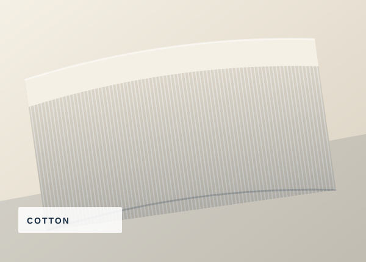
01COTTON FABRICS
Cotton Fabric
Explore cotton fabric options for apparel, workwear, and other textile applications.
CompositionTo be confirmed
Width / GSMOn request
TEXTILE PARTNERSHIP FOR BUSINESS
Explore our textile products and manufacturing capabilities for your business requirements.
From fabric selection to manufacturing conversations, start with a clear brief and a responsive business inquiry.
Discuss your requirements ↗
ABOUT THE COMPANY
Northloom Textiles is a configurable sample brand for a textile manufacturer, fabric supplier, or exporter. Use this space to explain your company's story, the markets you serve, and the products your team can supply.
We believe business relationships begin with clear specifications, practical communication, and an understanding of the customer's application.
PRODUCT CATEGORIES
Explore example categories. Product availability, construction, composition, widths, weights and minimum quantities should be confirmed with the supplier.

01Explore cotton fabric options for apparel, workwear, and other textile applications.
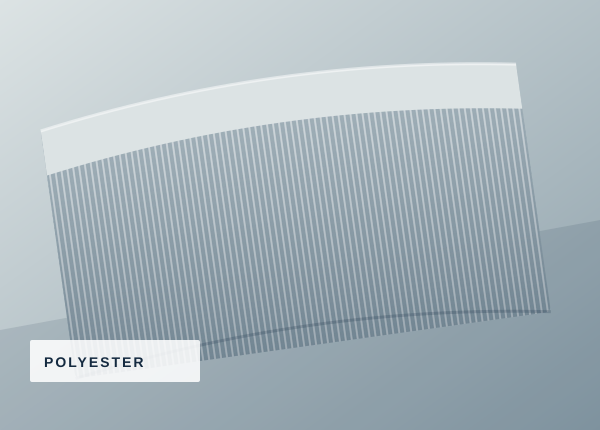
02Discuss polyester material options for your intended end use and performance needs.
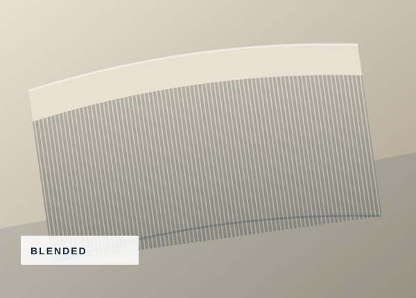
03Share your target blend, application, and preferred fabric feel for a focused discussion.
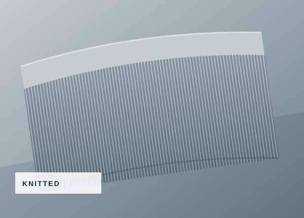
04Ask about knit structures and fabric options suitable for your project requirements.
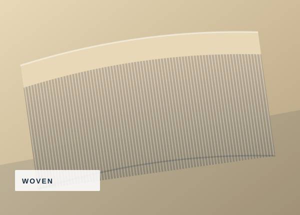
05Describe the end use, weave preference, colour, and any performance requirements.
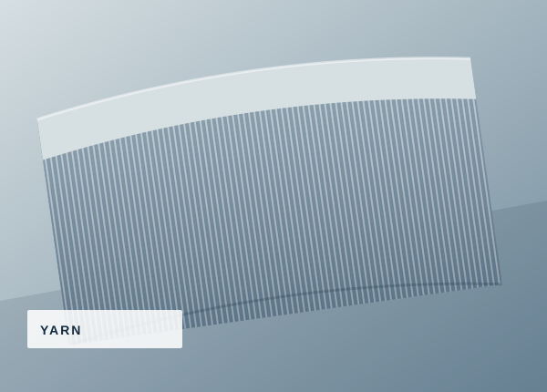
06Outline fibre type, count, packaging preferences, and intended manufacturing use.
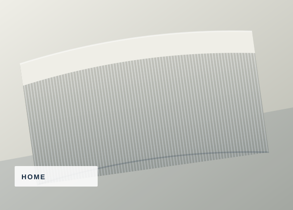
07Discuss fabric or finished textile requirements for bedding, interiors, and home use.
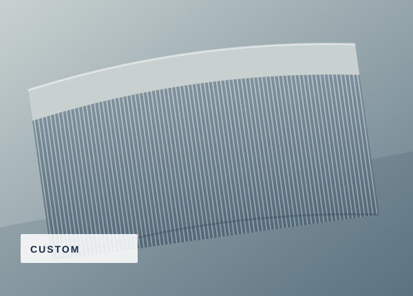
08Send a reference, specification sheet, sample details, or a description of your project.
ⓘ This catalogue is illustrative. It does not confirm stock, manufacturing capability, certifications, specifications, or pricing.
MANUFACTURING OVERVIEW
Describe only the processes your company actually provides. The stages below are editable placeholders for your real capabilities.
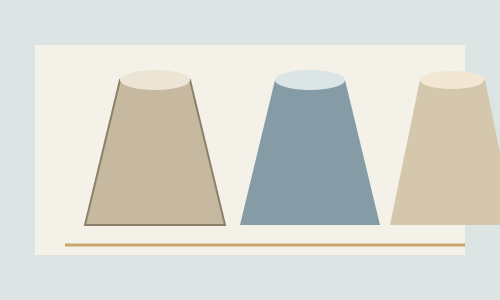
01 / SOURCINGDiscuss fibre, composition, colour, intended use, and material availability.
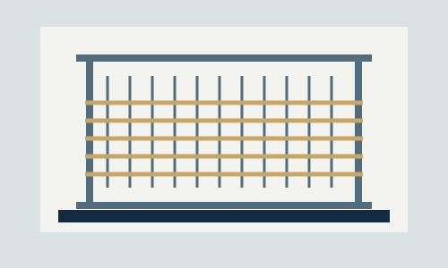
02 / PRODUCTIONShare the actual production methods and constructions supported by your operation.
Specify any available colour, finish, treatment, or customisation options.
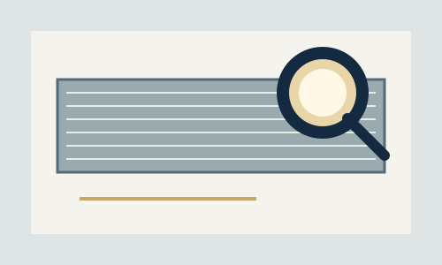
04 / REVIEWExplain the checks performed and the records or documentation you can provide.
QUALITY & SPECIFICATIONS
Quality requirements depend on the product and its intended application. Share your specification, approved sample, tolerances, testing needs, and inspection criteria so the supplier can review what is feasible.
No certifications or quality standards are claimed on this sample site. Add only documentation that is current and verified.
BUSINESS INQUIRIES
Send your product requirements through the form. WhatsApp will open with your details prepared as a message for our team to review.
CONTACT & COMPANY DETAILS
Replace these sample details with your verified company contact information before publishing.